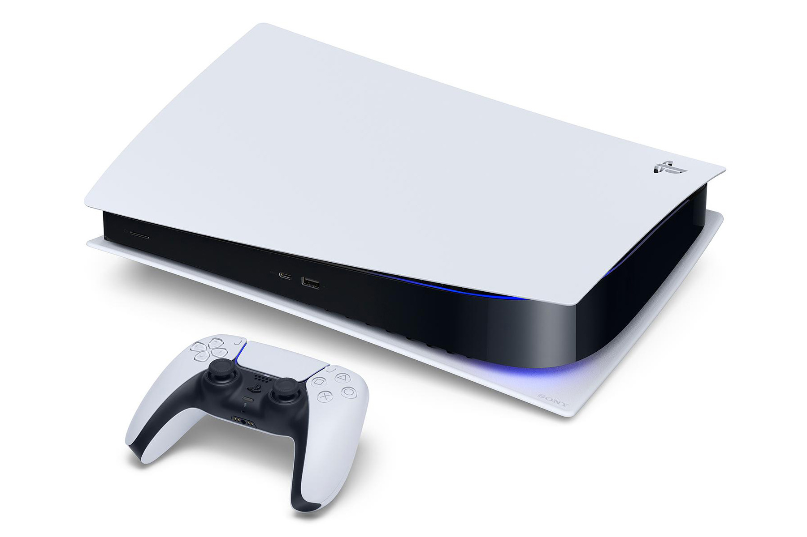
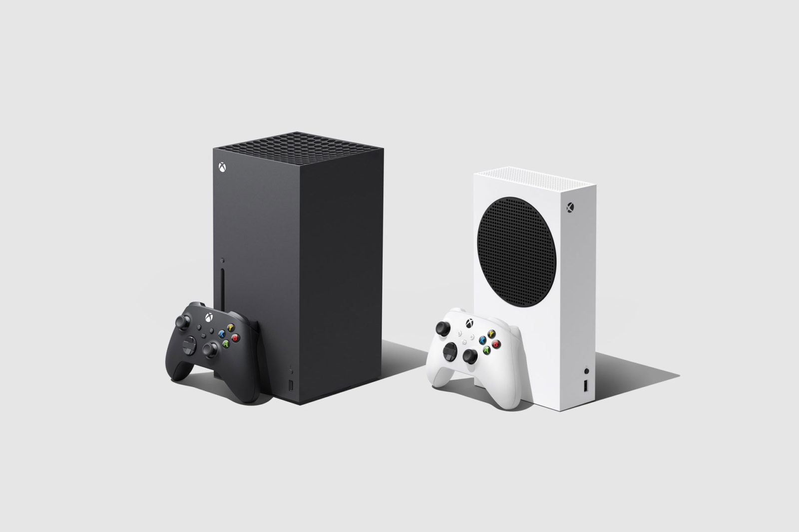
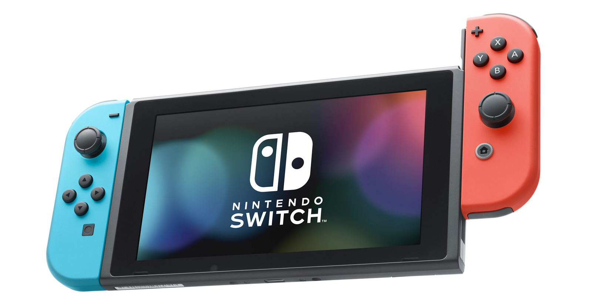

Современные игровые приставки
Основы
"Игровая приставка (игровая консоль) — специализированное электронное устройство, предназначенное для видеоигр; для таких устройств, в отличие от персональных компьютеров, запуск и воспроизведение видеоигр является основной задачей. Помимо видеоигр, приставки могут дополнительно выступать в качестве устройств для воспроизведения видео и музыки, доступа в Интернет. Домашние игровые приставки обычно используются в домашнем быту, используют телевизор, проектор или компьютерный монитор в качестве независимого устройства отображения и игровой контроллер в качестве устройства ввода. Портативные (карманные) игровые системы имеют собственное встроенное устройство отображения (ни к чему не приставляются), поэтому называть их игровыми приставками несколько некорректно." - так утверждает Википедия, и с ней нельзя не согласиться.
Консоли, актуальные на данный момент
- PlayStation 5 - игровая приставка девятого поколения, разработанная и выпускаемая японской компанией Sony Interactive Entertainment. Выход приставки состоялся 12 ноября 2020 года в Японии, США, Канаде, Мексике, Австралии, Новой Зеландии и Южной Корее, а 19 ноября 2020 года в остальных регионах.
- Xbox Series S|X— игровые приставки девятого поколения от американской транснациональной компании Microsoft. Series X и Series S являются новыми игровыми консолями в серии Xbox и преемницами Xbox One. Выпуск обеих приставок состоялся 10 ноября 2020 года.
- Nintendo Switch — гибридная игровая консоль, разработанная японской компанией Nintendo. Nintendo Switch совмещает в себе свойства домашней игровой приставки и портативной игровой системы и может использоваться в обоих качествах. Выпущена в продажу во всём мире 3 марта 2017 года.
- Google Stadia — облачный игровой потоковый сервис от компании Google, ранее известный под названием Project Stream. Сервис стал доступен 19 ноября 2019 года в 30 странах. По словам вице-президента Google Фила Харрисона, «Stadia предлагает мгновенный доступ к игре без необходимости загружать или устанавливать какие-либо игры». Игры сервиса доступны для различных устройств: ноутбуков, настольных компьютеров, телевизоров, планшетов и телефонов.


